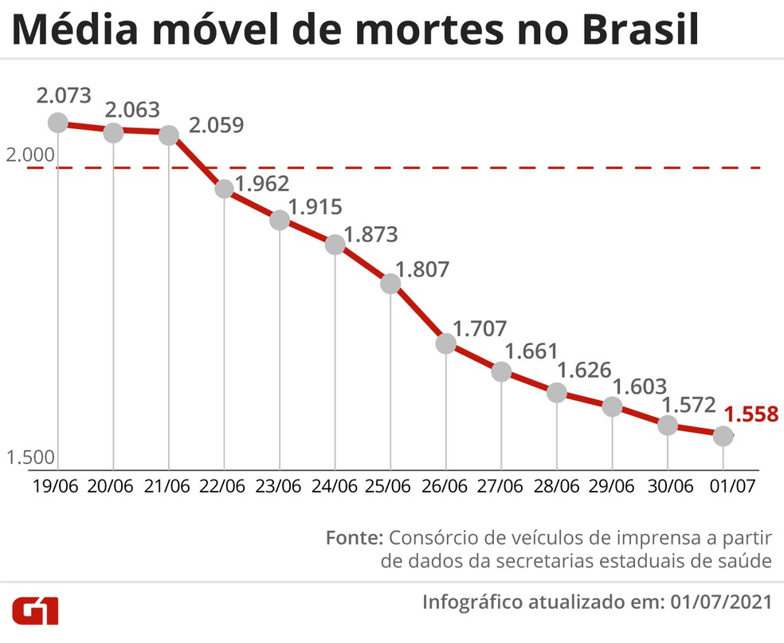

A vacinação é a forma mais segura e eficaz de conseguir proteção
A vacinação é a forma mais eficaz e segura de se adquirir proteção contra uma doença infecciosa. A vacinação elimina ou reduz drasticamente o risco de adoecimento ou de manifestações graves, que podem levar à internação e até mesmo ao óbito. Por ano, a vacinação evita de dois a três milhões de mortes, segundo a Organização Mundial da Saúde (OMS).
Dessa modo, é a única forma segura e eficaz de prevenir a COVID-19, de nos livrarmos da pandemia e recuperarmos o convívio social do qual tanto sentimos falta. É importante salientar que os imunizantes aprovados para uso no Brasil pela Agência Nacional de Vigilância Sanitária (Anvisa) são seguros e eficazes. Não há a menor possibilidade de você adquirir a COVID-19 por meio das vacinas. São vacinas inativadas, não replicantes, trabalham como um antígeno.
Queda das mortes aponta indício do efeito da vacinação no Brasil
Com o avanço da vacinação no Brasil, o país registou durante os últimos meses uma queda no número de mortes por Covid-19. Apesar das 616 mil mortes, a ciência, através de muito esforço, desenvolver um método funcional para minimizar os impactos. Devido à política de imunização em massa, as pessoas conseguiram garantir uma via de escape para não falecer com a drástica situação que o terrítório nacional vivenciou meses atrás.
